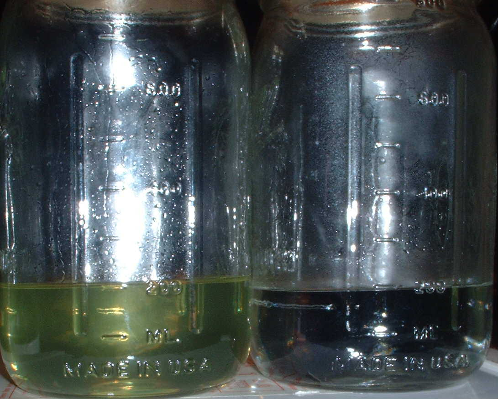

Bucket Reduction via MM Al/Hg Nitromethane
Much respect to VL for spawning the creation below. It's not only my new rxn vessel, it's also my lover.
|
What you will need to build your bucket can be purchased at the yellowish orange store.
WHAT YOU WILL NEED Heat resistant Epoxy (paint area) 7.5 Litre Polypropylene Bucket with ruber "O" ring in lids seal (paint aisle, the bucket can be can be smaller) Scrap Plexi Glass (far back, to the right) Plexi-glass cutter (ask someone) Shank washer (plumbing isle) Fan ( buy a fan, two would be better)
Get the Shank washer you purchased. Stare at it. Now get the lid for your bucket. Simply drill a hole in the center of the lid using a 7/8th's drill bit. Place the washer flush over the hole and use your Epoxy to create a bond/seal between the two.
Now you will want to create a window or two or three then add the plexi-glass. Carefully carve out your windows. I cut out three to give it some personality. It hasn't spoken yet.. If you think you can make do without the windows, go for yours. It's funta$tic to know whats going on during the rxn. Make SURE you use HEAT RESISTANT epoxy.
1.5L of MeOH 800mg of HgCl2 55g of Heavy Duty Al.
Ketone (mdp2p) and Nitromethane  50ml's ____________________________40ml's
Rig. On the very top you will see an addition funel, then a claisen, then the column, then the condensor. Fans blowing on the column and the bucket.
1.4L of water was combined with 524g of NaOH, then allowed to cool. This was added to the Rxn contents, in the same bucket Stir . Post Rxn contents
Next, 1L of toluene was added to the mix. Stir At this point your fairly happy at the cleanliness of this process. Everything is done in the same bucket, and stirring has never been easier! Here comes the hardest part if the whole process. You will need to pour as much toluene off the top as you can without spilling any. At this point you can find your own creative way to get the freebase out and into your sep funnel.. I tilted the bucket back and used a 500ml measuring cup to gather the top freebase layer. After collecting the freebase, another 750ml of toluene was added, stirred, and collected..
1.75L of toluene freebase.
l Washed 1.75L of freebase with 2L of saturated NaCl
Washed again with 2L of saturated baking soda. Washed 2x with 2L of clean water. Dried with 80g of Anhydrous Epsoms salts.
Dwarfer style gas rig
MDMA hcl. forming in the non polar solution. You should have close to 40g of mdma hcl. The best part about this process is the ability to cook a larger batch without having to use an overhead stirrer. Cook done using 2x scale of MM's beautiful write up. 4x scale would cut it close when it comes time to basify and extract, but its definetly possible. That's next on the list!
|